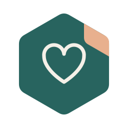
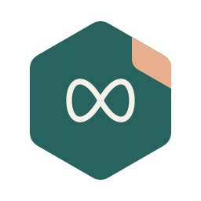
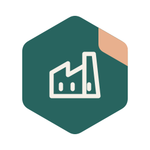

Om mig og mine interesser
Her er noget af det, jeg bruger tid på og gerne vil blive klogere på.

Kerneinteresser
 AdfærdsdesignGør det lettere at finde ud af og bruge
AdfærdsdesignGør det lettere at finde ud af og bruge
Mine kompetencer
Jeg synes, det er spændende, hvordan små ting kan gøre det lettere eller sværere at bruge en løsning. Hvad står der på knappen? Kan man finde det, man skal bruge? Er det tydeligt, hvad der sker, når man trykker?
Det har mine roller lært mig
Fra salg og kundekontakt ved jeg, at man er nødt til at se på den konkrete situation. Det samme gælder, når jeg laver mine egne værktøjer. Det, der virker oplagt for mig, er ikke nødvendigvis oplagt for den, der skal bruge det.
Det kan jeg bidrage med
Jeg kan godt lide at bygge noget, prøve det af og rette til. Især når en lille ændring i tekst eller opbygning kan gøre en opgave lettere at komme igennem. Også på en dag, hvor overskuddet ikke er så stort.

NeurodivergensForskellige hoveder og en hverdag, der fungerer
Neurodivergens interesserer mig meget. Hvordan vi tænker forskelligt, reagerer på indtryk og får en hverdag til at fungere. Og hvad der sker, når kravene og rammerne ikke rigtig passer til den, der skal være i dem.
Det hænger for mig sammen med diagnoseforståelse, ADL og praktisk læring. Jeg vil gerne arbejde med konkrete ting, der hjælper med at komme i gang, holde overblik og få hverdagen til at hænge sammen.
 Produktdesign og produktudviklingFra idé på skærmen til noget i hænderne
Produktdesign og produktudviklingFra idé på skærmen til noget i hænderne
Jeg kan godt lide hele turen fra en idé til noget, man kan stå med i hænderne. Tegne det, lave en model, printe, prøve og rette til. Array-lampeskærmen er et godt eksempel: Den startede som en rendering og skulle så pludselig kunne bygges af rigtige materialer. Der var lige lidt mere i det.
 Reparation og bæredygtighedKan det fikses, før det bliver smidt ud?
Reparation og bæredygtighedKan det fikses, før det bliver smidt ud?
Jeg kan godt lide at finde ud af, hvordan ting er skruet sammen, og om de kan repareres. Kan man skifte den del, der er gået i stykker? Kan en reservedel tegnes og printes? Jeg synes, det giver mening at tænke over den slags allerede, når man designer noget, og bruge de materialer, man har, hvor det er muligt.
 Grafisk designFotoredigering, filmklipning og 3D-visualisering
Grafisk designFotoredigering, filmklipning og 3D-visualisering
Fotoredigering, filmklipning, 3D-rendering og visualisering er lige mig. Jeg kan godt lide at arbejde med et billede, en film eller en 3D-model og få en idé til at se ud, som jeg har forestillet mig den. Det er også en stor del af, hvordan jeg viser mine egne produkter frem.
 Gaming og VRSpil og virtuelle verdener
Gaming og VRSpil og virtuelle verdener
Gaming og VR skal der også være plads til. Både selve spillene og det, man kan med virtuelle verdener. Jeg synes især, det er spændende at kunne gå ind i en 3D-verden og opleve størrelse, rum og ting omkring sig på en anden måde end på en almindelig skærm.

Lokal produktionFra idé til færdig ting tæt på, hvor den skal bruges
Jeg kan godt lide tanken om, at flere ting kan laves tæt på, hvor de skal bruges. Med 3D-print, CNC og almindeligt håndværk kan man lave mindre serier, reservedele og ting, der passer til et konkret behov. Det vil jeg gerne arbejde mere med og lære andre at bruge. Der er noget ret fedt i selv at kunne lave den del, man står og mangler.